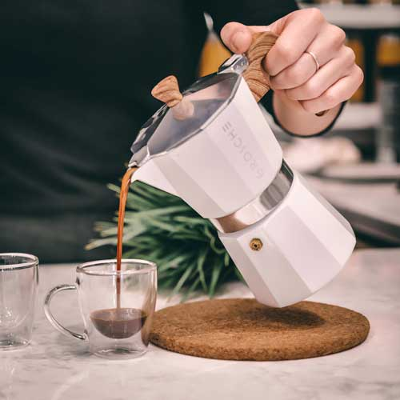
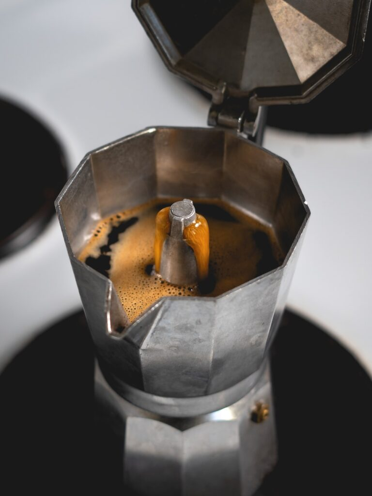

Как да използваме кафеварка
Как да използваме кафеварката, за да получим ароматно и богато кафе?
Съществуват няколко вида устройства за приготвяне на кафе, които се различават помежду си в начина по който го приготвят.Разбира се, всяка кафемашина включва намеса в работата си на човек до известна степен.
Най-малкото, за да пиете топло кафе, е необходимо задължително да закупите смляно кафе или кафе на зърна, което да го смелите сами, да напълните филтъра с кафе, да напълните вода, да почистите филтъра.
В края на миналия век у нас бяха много популярни кафеварките. Устройството-кафеварка тип Гейзер е изобретено преди около двеста години в Англия и оттогава е много популярно в много европейски страни.
Принципът на работа на кафе машината тип гейзер е изключително прост – водата се вари и издига по тръбата, където сварява кафето. Устройството е разделено на три основни части долна част за вода, средна част за кафе и горна част за приготвената напитка.
Като цена кафеварката е доста по-евтина в сравнение с някои други видове машини за кафе и е много лесна за използване. Трябва да напълните вода в долната част, но не над максималната маркировка и да добавите смляното кафе във филтъра.
Експертите съветват използването на средно или грубо смляно кафе, за по-вкусна напитка.
Напълнете долната част на кафеварката с вода, като нейното количество не бива да превишава указаното. Поставете средната част на кафеварката, т.нар. филтър и поставете в него нужното количество кафе. Ред е на най-горната част, която трябва да се завинти здраво.
След това просто поставете уреда върху газов или електрически котлон и изчакайте да заври. Не можете да отваряте горния капак по време на варенето, тъй като може да се изгорите. След 5-7 минути напитката ще бъде готова и може да напълните чашата си, като държите кафеварката за дръжката.
Кафето, приготвено в кафеварка, се нарича италианско, защото този метод на приготвяне се използва в Италия. Кафеварката трябва да се почиства след всяка употреба. Кафето трябва да се извади и изхвърли, а уредът трябва да се измие обилно с вода.